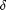
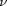

ANISORFILT - Morphological anisotropic diffusion.
Contents
Description
Perform the morphological anisotropic diffusion (erosion or dilation) using the orientation information derived from the anisotropic continous scale model of [BBW07] and numerical scheme therein.
Syntax
u = ANISORFILT(I);
u = ANISORFILT(I, method, niter, delta, nu, ...
'Property', propertyvalue, ...);
Inputs
I : an input image with size (X,Y,C), where C>1 when I is multichannel.
method : (optional) string setting the morphological operation applied; it is either:
- 'dil' for anisotropic dilation (typically when one wants to continue/ prolong bright structures on a dark background, like edge map continuation),
- 'ero' for anisotropic erosion (when continuing dark structures on a dark background);
default: method='dil'.
niter : (optional) number of iterations; default: niter=10.
delta : (optional)  of the numerical scheme; default: delta=0.5.
nu : (optional) nonegative integer  which influences the propagation of the structures in the normal to the gradient direction; default: nu=4.
Property [propertyname propertyvalues]
'rho', 'sig', 'der', 'int', 'samp' : see GSTSMOOTH and ANISOR for the description of these variables; default: rho=3, sig=1, der='fast', int='fast' and samp=1.
Output
u : output of the anisotropic diffusion scheme.
Examples
a=zeros(50,50); a(25,10:20)=1; a(25,30:40)=1; % input method='dil'; delta=.5; niter=5; nu=5; %orientation diffusion parameters rho=3; sigma=1; der='sob'; int='fast'; samp=1; %derivation parameters u=anisorfilt(a, method, niter, delta, nu, 'rho', rho, 'sig', sigma, ... 'der', der, 'int', int, 'samp', samp); figure, imagesc(u), colormap gray;
[x,y,a] = createleakcircle(60,'grid',20,5,128); imshow(a); method='dil'; delta=.5; niter=20; nu=5; %orientation diffusion parameters rho=3; sigma=1; der='fast'; int='fast'; samp=1; %derivation parameters u=anisorfilt(a, method, niter, delta, nu, 'rho', rho, 'sig', sigma, ... 'der', der, 'int', int, 'samp', samp); figure, imshow(u); u = bwmorph(u>0.8,'thin',Inf); figure, imshow(u);
Reference
[BBW07] M. Breuß, B. Burgeth and J. Weickert: "Anisotropic continuous-scale morphology", Proc. IbPRIA, LNCS 4478, pp. 515-522, Springer, 2007. http://www.springerlink.com/content/1hm264w86111m148/
See also
Related: GSTSMOOTH, ANISOR. Called: ANISORFILT_BASE.
Function implementation
function u = anisorfilt(I,varargin)
parsing parameters
error(nargchk(1, 23, nargin, 'struct')); error(nargoutchk(1, 1, nargout, 'struct')); % mandatory parameter if ~(isnumeric(I) || islogical(I)) error('anisorfilt:inputerror','a matrix is required in input'); end % optional parameters p = createParser('ANISORFILT'); % principal optional parameters p.addOptional('method', 'dil', @(x)ischar(x) && any(strcmpi(x,{'dil','ero'}))); p.addOptional('niter', 10, @(x)isscalar(x) && x>0); p.addOptional('delta', 0.5, @(x)isscalar(x) && x>0); p.addOptional('nu', 4, @(x)isscalar(x) && x>=0); p.addParamValue('rho', 3, @(x)isscalar(x) && isfloat(x) && x>=0); p.addParamValue('sig', 1, @(x)isscalar(x) && isfloat(x) && x>=0); p.addParamValue('der', 'fast', @(x)islogical(x) || (ischar(x) && ... any(strcmpi(x,{'matlab','vista','fast','conv','diag', ... 'tap5','sob','opt','ana'})))); p.addParamValue('int', 'fast', @(x)islogical(x) || (ischar(x) && ... any(strcmpi(x,{'matlab','conv','fast','ani'})))); p.addParamValue('samp', 2, @(x)isscalar(x) && round(x)==x && x>=1 && x<=5); % parse and validate all input arguments p.parse(varargin{:}); p = getvarParser(p);
checking/setting parameter
% the sign of delta defines if the morphological operation is a dilation ('+' % sign) or an erosion ('-' sign) if strcmpi(p.method,'ero'), p.delta = -p.delta; end
perform the anisotropic diffusion
u = anisorfilt_base(I, p.niter, p.delta, p.nu, p.rho, p.sig, ... p.der, p.int, p.samp); if p.disp figure, imagesc(rescale(u,0,1)), colormap gray, axis image off; title('continuous-scale anisotropic diffusion') end
end % end of anisorfilt